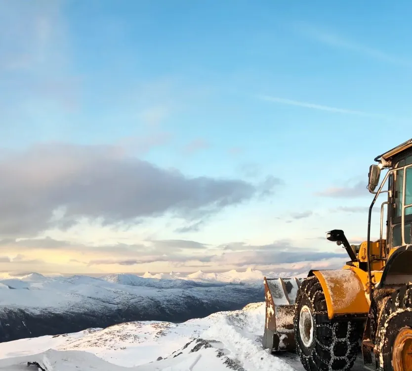
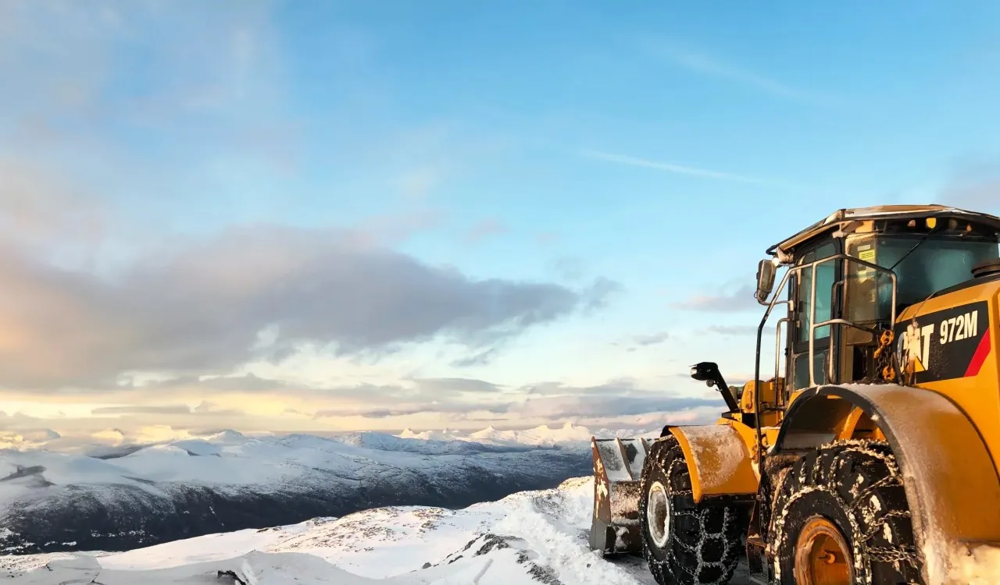
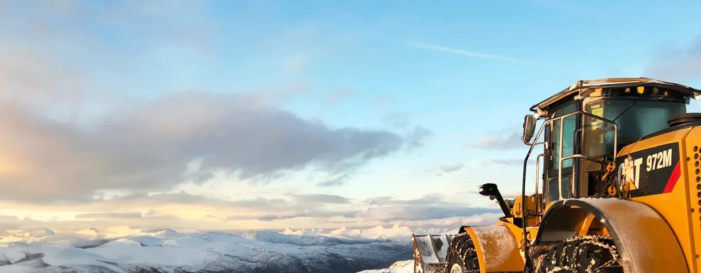

Forside/Tjenester
Tjenester
Seks områder, ett firma. De fleste oppdrag kombinerer flere av dem – for eksempel grunnarbeid, VA og massetransport i samme prosjekt.
01 / Grunnarbeid
Klargjøring av tomt
Vi tar på oss både store og krevende grunnarbeidsoppdrag for private og offentlige kunder.
Vi har sentral godkjenning innen veg- og grunnarbeid, landskapsutforming, innmåling og utstikking.
- Utgraving og planering.
- Landskapsutforming.
- Innmåling og utstikking.


02 / Vann og avløp
Sertifiserte anleggsrørleggere
Vi har sertifiserte anleggsrørleggere med høy kompetanse på komplekse vann- og avløpsanlegg.
De har sentral godkjenning innen vannforsyning og avløp.
- Rørlegging og ledningsarbeid.
- Vann-, overvann- og avløpsløsninger.
- Etablering av kummer.
03 / Massetransport
Masser inn og ut
Transport av masser til og fra anlegget, med egne biler og egne sjåfører.
- Bortkjøring av overskuddsmasser.
- Tilførsel av stein og pukk.
- Logistikk tilpasset anlegget.

04–06 / Mer
Fjell, transport og riving
| Tjeneste | Innhold |
|---|---|
| Fjell- og bergverksarbeid | Fjellarbeid og bergverksarbeid som del av anleggsgjennomføringen. |
| Maskin- og spesialtransport | Transport av maskiner og spesiallaster mellom anlegg. |
| Riving og miljøsanering | Riving med håndtering av miljøfarlige materialer. |
Hvilken tjeneste trenger dere?
Beskriv oppdraget, så sier vi hva det krever.